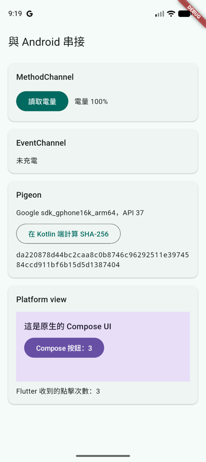

第 6 章 · 與 Android 串接
Platform channel 與 Pigeon
Flutter 的 Dart 代碼跑在自己的引擎裡，不能直接呼叫 Android SDK。要讀電量、用藍牙、呼叫公司既有的 Kotlin 函式庫，就得透過 platform channel 把訊息送到 Kotlin 端執行，再把結果傳回來。這一頁從最基本的 MethodChannel 開始，最後改用 Pigeon 產生有型別的介面。
範例專案
說明本章的代碼都來自 repo 裡的 samples/native_bridge/，一個可以直接執行的 Flutter App，CI 會編譯它。四張卡片分別示範 MethodChannel、EventChannel、Pigeon 和下一頁的「嵌入原生 View」：

開好 Android 模擬器後執行：
cd samples/native_bridge
flutter run原生功能無法在瀏覽器裡執行，所以這一章沒有線上 demo，左右兩欄改成「Kotlin 端」與「Dart 端」的對照。
訊息是怎麼傳的
說明幾個 Kotlin 開發者要先知道的特性：
- 永遠是非同步的：Dart 端拿到的是
Future，不能同步呼叫 Kotlin。 - 用字串配對：channel 名稱和方法名稱都是字串，兩邊寫的不一樣也能編譯，執行時才會出錯。
- 只能傳特定型別：參數和回傳值會被序列化，不能傳任意物件。
- Kotlin 端在主執行緒執行：耗時的工作要自己切到背景，就像在 Activity 裡一樣。
MethodChannel：一問一答
說明最常用的是 MethodChannel，相當於一個非同步的遠端呼叫：Dart 端呼叫方法名稱，Kotlin 端用 when 分派，再呼叫 result 的其中一個方法回覆。
Kotlin 端在 configureFlutterEngine 裡註冊 handler。這是 FlutterActivity（或 FlutterFragmentActivity）提供的覆寫點，引擎建立後會呼叫一次：
result 的三種回覆，在 Dart 端分別變成：
| Kotlin 端 | Dart 端 |
|---|---|
result.success(value) | Future 正常完成，得到 value |
result.error(code, message, details) | 拋出 PlatformException，可以用 e.code 判斷錯誤種類 |
result.notImplemented() | 拋出 MissingPluginException |
| handler 沒有註冊（例如 channel 名稱打錯） | 同樣是 MissingPluginException |
可以傳哪些型別
說明MethodChannel 預設使用 StandardMessageCodec，支援的型別對照如下：
| Dart | Kotlin |
|---|---|
null | null |
bool | Boolean |
int | 32 位元放得下時是 Int，否則是 Long |
double | Double |
String | String |
Uint8List、Int32List、Float64List 等 | ByteArray、IntArray、DoubleArray 等 |
List | List（實際是 ArrayList） |
Map | Map（實際是 HashMap） |
自訂的資料類別沒辦法直接傳，要自己轉成 Map，另一端再一個個欄位取出來轉型。int 會依大小變成 Int 或 Long，在 Kotlin 端轉型時特別容易出錯。這些麻煩正是後面 Pigeon 要解決的問題。
EventChannel：原生端持續推送
說明MethodChannel 是一問一答。要持續收到原生事件（感測器、廣播、下載進度），就用 EventChannel，Dart 端拿到的是 Stream。Kotlin 端的 StreamHandler 跟 callbackFlow 的結構幾乎一樣：
| callbackFlow | EventChannel.StreamHandler |
|---|---|
| 開始 collect，區塊開始執行 | Dart 端開始 listen，呼叫 onListen |
trySend(value) | events.success(value) |
close(exception) | events.error(…)，Dart 端的 Stream 收到錯誤 |
awaitClose { 取消註冊 } | onCancel |
Dart 端的 receiveBroadcastStream() 是 broadcast stream：多個 listener 共用同一個原生訂閱，第一個 listener 出現時呼叫 onListen，最後一個取消時才呼叫 onCancel。
Pigeon：產生有型別的介面
說明手寫 channel 的問題都出在「兩邊靠字串和 Map 約定」。Pigeon 是 Flutter 團隊維護的程式碼產生器：你用 Dart 寫一份介面定義，它產生 Dart 端的呼叫代碼和 Kotlin 端的 interface，channel 名稱、序列化、轉型全部自動處理。概念上跟 Retrofit 從 interface 產生 HTTP 呼叫很像，或是 AIDL 之於 Binder。
先在 pubspec.yaml 的 dev_dependencies 加上 pigeon，再寫介面定義檔：
執行產生器，會輸出 lib/src/messages.g.dart 和 Messages.g.kt 兩個檔案：
dart run pigeon --input pigeons/messages.dartKotlin 端實作產生出來的 DeviceApi interface，Dart 端直接呼叫產生出來的 DeviceApi 類別：
- 型別錯誤在編譯時就會發現：介面改了卻沒更新實作，Kotlin 端直接編譯失敗。
- 標上
@async的方法會產生成suspend fun：可以直接用withContext切到背景執行緒，產生的代碼會等它完成再回覆。 - Dart 的
int一律對應Long，不像 StandardMessageCodec 會依大小變成Int或Long。 @FlutterApi方向相反：Dart 端實作、Kotlin 端呼叫。下一頁「嵌入原生 View」會用它把 Compose 按鈕的點擊傳回 Flutter。
該用哪一種
說明| 做法 | 適合的情況 |
|---|---|
| 現成套件（pub.dev） | 常見的系統功能。先找這個，找不到再自己寫 |
MethodChannel / EventChannel | 一兩個簡單的呼叫、快速驗證想法 |
| Pigeon | 介面超過幾個方法、有自訂資料類別、需要長期維護。實務上的預設選擇 |
| 包成 Flutter plugin 套件 | 多個 App 要共用同一段原生代碼。plugin 就是「Dart API ＋ 各平台實作」打包在一起，內部通常也用 Pigeon |
另外還有一條路是 jnigen：直接從 Java/Kotlin 類別產生 Dart 綁定，透過 JNI 同步呼叫，不經過 channel。它還在快速發展中，適合想直接呼叫大量 Android API 的情況，有興趣可以追蹤。
執行緒注意事項
說明- Kotlin 端的 handler 在 Android 主執行緒上執行。Flutter 3.29 起，Dart 的 UI 執行緒和 Android 主執行緒合併成同一條，所以 handler 卡住主執行緒，Flutter 畫面也會跟著卡住。耗時的工作用 coroutine 切到
Dispatchers.IO或Default，完成後再回覆。 EventSink的方法要在主執行緒呼叫。從背景執行緒推送時，先切回Dispatchers.Main。- Dart 端預設只有主 isolate 能使用 channel。要在背景 isolate 呼叫，需要先用
BackgroundIsolateBinaryMessenger.ensureInitialized(token)初始化。